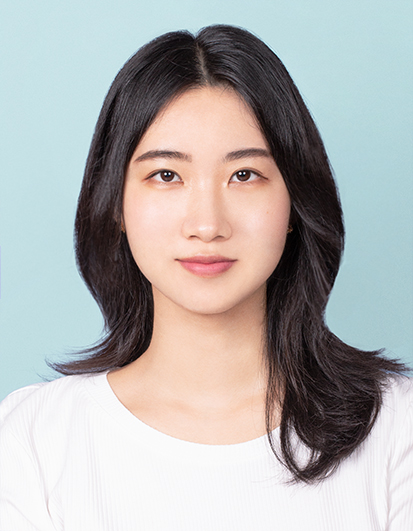
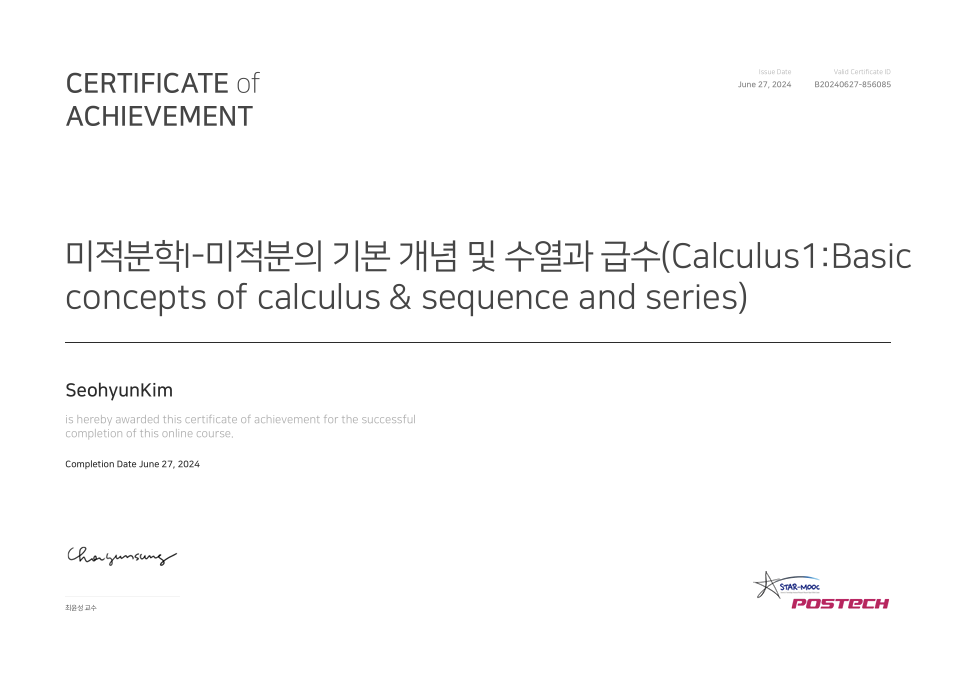

Seohun Kim

About Me
Recently, I’ve become quite obsessed with meditation, Pilates, and cooking.
These interests not only help me unwind but also bring fresh energy and focus to my academic work.
Contact
Email (school): seohyun03@hanyang.ac.kr
Email (personal): dorothy5018@gmail.com
Education
B.A in Library and Information Science
Myongji University (Seoul, South Korea)
Minor: Business Administration
Hanyang University (Seoul, South Korea)
Research Lab: Business Intelligence and Strategy Lab
Publications
-
“Study of Image Deep Learning Depending on Recognition of Color”
Seohyun Kim and Misoo Shin
Preparing for submission to Journal of the Association for Information systems, Expected submission Nov 2024 -
“Analyzing the Influence of Payment Models and Visual Elements on the Success of Open World Adventure Games: An Empirical Approach”
Seohyun Kim, Jungun Moon, Seongho Cho, and Misoo Shin
Journal of Information Technology Services (Under review) -
“Comparative Analysis of Metaverse Research Trends and Public Perception using Topic Modeling”
Seohyun Kim, Seongho Cho, and Misoo Shin
Journal of the Korean Operations Research and Management Science Society, 48.3(2023): 41-53
Conferences
-
“Analyzing the Influence of Payment Models and Visual Elements on the Success of Open World
Adventure Games: An Empirical Approach”
Seohyun Kim, Jungun Moon, Seongho Cho
Presented at the 25th International Conference on Electronic Commerce, and Korean Society of IT services 2024 Spring Joint Conference, 2024 -
“Comparative Analysis of Metaverse Research Trends and Public Perception using Topic Modeling”
Seohyun Kim and Seongho Cho
Presented at the Joint Conference of the Korean Institute of Industrial Engineering, and the Korean Society of Management Science Spring 2023, 2023
Projects & Activities
Projects
-
KT Alley Economy Project (OCT 2022 - JAN 2023):
Suggested solutions and strategies to help small business owners increase profits by analyzing various data sources.
- Analyzed floating population, regional sales, and commercial districts using KT’s proprietary programs.
- Implemented Latent Dirichlet Allocation (LDA) to examine social media data from platforms like Instagram and Brunch.
- Provided actionable insights on holiday promotions, delivery services, and new menu categories based on data analysis results.
-
Quality Error Prediction Analysis Model for Defect Prevention (JUL 2022 - DEC 2022): The preemptive detection of melting tank error
- Researched on papers relevant to defects in the dissolution process and particle dissolution.
- Participated in data processing and visualization.
- Cooperated with utilize DNN to classification analysis with Tensorflow2 and GAN to predict future data distribution .
- Prepared presentation materials and reports of the project
-
Lpay Activation and Marketing Strategy Based on Machine Learning (MAY 2022 - AUG 2022): Development of Lpay customer activation by customized marketing strategies depending on the
characteristics of each customer group
- Participated in data visualization and developing customer segmentation model by XGBoost Classifier .
- Suggested marketing strategies and events based on the penchant of cohort .
Hackathons
-
Sentence Type Classification AI Competition (DEC 2022)
- Public LB 74th, Private LB 38th out of 356 participants, ranked in the top 11%
- Technologies used: Data preprocessing, Utilized BERTClassifier
-
2022 Tourism Data AI Competition (OCT 2022)
- Public LB 74th, Private LB 38th out of 356 participants, ranked in the top 11%
- Technologies used: Utilized Tfidfvectorizer, Truncated SVD to deal with text columns
-
Travel Product Application Prediction (AUG 2022 - SEP 2022)
- Public LB 74th, Private LB 38th out of 356 participants, ranked in the top 11%
- Technologies used: Data preprocessing, Created derived variables, Utilized Staking with XGBClassifier, CatBoostClassifier, LGBMClassifier
-
AI Competition for Predicting Antenna Performance of Self-Driving Sensors (AUG 2022)
- Public LB 115th, Private LB 130th / 975, ranked in the top13%
- Data preprocessing, Created derived variables, Utilized Staking with XGBRegressor, CatBoostRegressor, LGBMRegressor
-
Forecasting Sales by Shopping Mall Branch (JUL 2022 - AUG 2022)
- Public LB 73rd, Private LB 74th / 1198, ranked in the top6%
- Data preprocessing, Created derived variables, Utilized CatBoostRegressor
-
Population Data-Based Income Prediction (APR 04 - APR 2022)
- Public LB 73rd, Private LB 74th / 1198, ranked in the top6%
- Data preprocessing, Created derived variables, Utilized CatBoostClassifier
Additional Education
- Calculus1:

Basic concepts of calculus & sequence and series - Linear Algebra:

Linear relationships and transformations in space using vectors and matrices
Extracurricular Activities
Undergraduate
-
Startup Project Reborn | FEB 2016 - AUG 2017
- Planning and Producing Travel Content for Foreign Tourists
-
Samsung Group University Student Supporters | JUL 2022 - AUG 2022
- Planning and Proposing Online Marketing Strategies for University Students
-
Samsung Group University Student Supporters | JUL 2022 - AUG 2022
- Planning and Proposing Online Marketing Strategies for University Students
-
Club Dreamforest | JUL 2022 - AUG 2022
- Official Blog Administrator, Networking Event "Making Real Buddy in Korea" Staff and Program Facilitator
Graduate
- Leader in Study Sessions in Business Inteligence and Strategy Lab (2022)
- Teaching Assistant at Hanyang University Law School (2022)